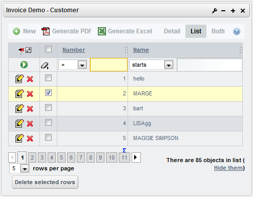

Since
version 4.5 you can add and modify styles with the file custom.css
in web/xava/style.
To overwrite an existing style
just add the style name and define it in your custom.css file.
If you put:
body{
font-size: 9px;
}
.ox-list-pair, .ox-list-odd {
height: 20px;
}
You change the font-size
to all your application (inside portal too) and the height of the rows
in list. Look at naviox.css for a complete list of available
CSS classes.
A few css tricks
Here are a couple of css
tricks/tips. Please add/edit an entries you feel appropriate.
Style
@ReadOnly fields uniquely
input[disabled] {
background: black;
color: white;
...
}
Add
row-xxx to @Tab
Sometimes, you
will want to extend the existing "row-highlight" styling in the @Tab
definition. Here's a way to add, say, "row-red" with hovering as a
different color.
First, select
the row definition you want, and add the following to your custom.css
file. You can extend this to font-size, effects, etc. and add any
definitions you like.
tr.row-red {
background: red;
}
tr .row-red:hover {
background: yellow;
}
Remove the Application and Module
display between Main Menu and body (frees screen real estate)
#module_description {
display: none;
}
Remove
checkboxes from list-mode display
.ox-list-header input[type="checkbox"] {
display: none;
}
.ox-list-pair input[type="checkbox"] {
display: none;
}
.ox-list-odd input[type="checkbox"] {
display: none;
}
Remove checkboxes from a specific module
The above changes are global across your application. You can make them
specific to a module by including the Application and Module names as part
of the string. For example, my Application name is: KitBase and I have a
module named Dashboard. Because Dashboard's list is a list of Collections,
my entry in custom.css looks like this:
.ox_KitBase_Dashboard__collection_scroll input[type="checkbox"] {
display: none;
}
If it were a standard list of properties, the entry would look like this:
.ox_KitBase_Dashboard__list_scroll input[type="checkbox"] {
display: none;
}
*Note the double underscore between the module name and the
rest of the string! *
Change background color of list-mode hover
.ox-list-pair:hover, .ox-list-odd:hover {
background: #9EA8AD;
}
Add
elements to the page (new in v5.6)
If you want to add your own elements to the page in order they are always
present in your application, you can do it in
web/naviox/indexExt.jsp
of your project. It is included at the end of the page, but using CSS you
can place it in any part of the screen.
For example, if you want to show a BETA sign in right top corner, thus:

You can write in your
indexExt.jsp:
<div id="beta">BETA</div>
Then place it adding the next code in the
custom.css:
#beta {
position:absolute;
right: -65px;
top: 5px;
color: white;
font-size: 120%;
font-weight: bold;
transform: rotate(45deg);
-webkit-transform: rotate(45deg);
background: red;
padding: 50px 50px 5px 50px;
z-index: -10;
}
Inside portals
Inside a portal OpenXava portlets acquire automatically the portal skin,
therefore if you work with a portal just create or modify the style for
the portal itself and the OpenXava application will adapt to it. For
example, when you deploy your application in Liferay 6 it looks in this
way:

Additionally, if you want to specific style for a portal, the next
properties are available in
xava.properties:
liferay6StyleClass,
liferay51StyleClass, liferay41StyleClass, liferay43StyleClass,
webSpherePortal61StyleClass, webSpherePortal6StyleClass,
webSpherePortalStyleClass, JetSpeed2Style.
Thus, if you want create your own style for OpenXava applications running
inside a Liferay 6, just add the next line to
xava.properties:
liferay6StyleClass=org.openxava.test.style.MyLiferay6Style
Of course, you have to write the
MyLiferayStyle class.
In v5 the default visual style of
OpenXava is defined in
/web/naviox/style/naviox.css. The
naviox.css
file is in your project but it's copied from the
Addons project
on deploy. Anyways, instead of modifying
naviox.css is better to
modify
custom.css as explained above.
Defining
your own style (until v4.9.1)
These instructions are for v4.2 to v4.9.1, for older versions consult
OpenXavaTest/xava.properties. For v5.x use custom.css as explained
above.
For defining your own style add the next entries to the
xava.properties
files of your project:
styleClass=org.openxava.web.style.Style
styleCSS=mystyle/mystyle.css
Then create a folder called
mystyle inside
web/xava/style,
and add a file
mystyle.css in that folder. In this file you can
use the next CSS classes:
ox-module, ox-view, ox-detail,
ox-action-link, ox-image-link, ox-button-bar, ox-button-bar-button,
ox-active, ox-first, ox-last, ox-label, ox-module-description,
ox-frame-content, ox-list, ox-list-header, ox-list-subheader,
ox-list-pair, ox-list-odd, list-pair-selected, list-odd-selected,
ox-list-info, ox-list-info-detail, ox-list-title, ox-header-list-count,
ox-frame (new in v4.8, before it was frame), ox-frame-actions,
ox-frame-title, ox-frame-title-label, ox-errors, ox-messages,
ox-section, ox-section-tab, ox-active-section, ox-section-link,
ox-collection-list-actions, ox-bottom-buttons,
ox-page-navigation-selected, ox-page-navigation,
ox-page-navigation-pages, ox-page-navigation-arrow,
ox-page-navigation-arrow-disable, ox-images-gallery (new in v4.8),
ox-help, ox-total-row, ox-total-cell, ox-total-capable-cell,
ox-filter-cell, ox-frame-totals, ox-frame-totals-label,
ox-frame-totals-value.
Optionally, you can create your own
Style class extending
org.openxava.web.style.Style. This allows you
even more control over look & feel, layout and behavior of your
application.
Predefined
styles (until v4.9.1)
You can use the styles in this section with v5.0 if you deactivate
menus and login as explained in migration
from v4.9.1 to v5.0.
OpenXava comes with some predefined styles. You can configure them in
properties/xava.properties
of your project:
# styleClass and styleCSS have only effect outside a portal,
# inside a portal OX portlets acquire automatically the portal skin.
# Liferay 5.1: This is the DEFAULT, so you do not need to uncomment the next lines
#styleClass=org.openxava.web.style.Liferay51Style
#styleCSS=liferay51/css/everything_unpacked.css
# Liferay 4.3/4.4/5.0: uncomment the next line for use this nice and slow style
#styleClass=org.openxava.web.style.Liferay43Style
#styleCSS=liferay43/css/everything_unpacked.css
# Classic style: uncomment the next line for use the old OX style
#styleClass=org.openxava.web.style.PortalStyle
#styleCSS=default.css
An
example: iPad style (until v4.9.1)
With v5.0 the standard style works fine with tablets, anyways y
ou
can use the old iPad style with v5.0 if you deactivate menus and login
as explained in migration
from v4.9.1 to v5.0. Moreover, since v5.1 you should add the entry
org.openxava.web.style.IPadStyle in styles.properties.
iPad style is included by default in OpenXava and it is activated
automatically when the user access to the application from an iPad.
Browser/device
detection
In order to achieve the device detection, we add the next method in the
style class:
public boolean isForBrowse(String browser) {
return browser != null && browser.contains("iPad");
}
This is the way to match a specific style for a specific browser or
device. You can use this technique in your style, though if you do so, you
have to create a
styles.properties file in the
properties
folder of your project, adding a line with the class of your style, as the
next one:
com.mycompany.myapp.style.MyDeviceStyle
Moreover, you have to write
MyDeviceStyle class with the
appropriate
isForBrowse() method.
JavaScript
code
iPad style also uses native iPad effects like flip and slide. To achieve
it we use some JavaScript code. In this case we define a custom method to
specify the way a HTML token retrieved from server with AJAX is assigned
to a HTML document element:
public String getSetHtmlFunction() {
return "ipad.setHtml";
}
In this way, we indicate that the function to be used is
ipad.setHtml,
instead of the standard one. This function is defined in an
ipad.js
file. We must indicate to the style class that loads this JavaScript file:
private static String [] jsFiles = {
"ipad/ipad.js",
};
public String [] getNoPortalModuleJsFiles() {
return jsFiles;
}
This
ipad.js file is on the
web/style/ipad folder:
if (ipad == null) var ipad = {};
ipad.onLoad = function() {
var id = $('body').data('ipad-slide-element');
var clazz = $('body').data('ipad-slide-class');
$('#' + id).addClass(clazz);
setTimeout("$('#" + id + "').removeClass('" + clazz + "')", 0);
$('body').removeData();
}
ipad.onClickNextPage = function(listId) {
$('#' + listId).addClass('slided-left');
$('body').data('ipad-slide-element', listId);
$('body').data('ipad-slide-class', 'slided-right');
}
ipad.onClickPreviousPage = function(listId) {
$('#' + listId).addClass('slided-right');
$('body').data('ipad-slide-element', listId);
$('body').data('ipad-slide-class', 'slided-left');
}
ipad.setHtml = function(id, content) {
if (!id.match(/__core$/)) {
$("#" + id).html(content);
return;
}
// Core
$("#container").addClass("container");
$("#sheet").addClass("sheet");
$("#front").addClass("face");
$("#back").addClass("face");
if ($("#sheet").hasClass("flipped")) {
$("#" + id).html(content);
$("#sheet").removeClass("flipped");
}
else {
$("#core_BACK").html(content);
$("#sheet").addClass("flipped");
}
$('#sheet').bind('webkitTransitionEnd',
function( event ) {
if ($("#sheet").hasClass("flipped")) $("#" + id).empty();
else {
$("#core_BACK").empty();
$("#container").removeClass("container");
$("#sheet").removeClass("sheet");
$("#front").removeClass("face");
$("#back").removeClass("face");
}
$('#sheet').unbind();
},
false
);
}
CSS
file
Here the complete
ipad.css file. You can find this file in the
OpenXava distribution, in
OpenXava/web/style/ipad folder.
body {
margin: 0px; background: black;
}
#xava_loading, #xava_loading2 {
padding: 20px;
border: none;
background: -webkit-gradient(linear, left bottom, left top,
from(#10182C), color-stop(0.5, #121A2E),
color-stop(0.51, #282F41), to(#7E838D));
opacity:.60;
-webkit-border-radius: 7px;
color: white;
text-shadow:0px -1px 1px rgba(0,0,0,0.75);
font-weight: bold;
-webkit-box-shadow: 10px 10px 10px rgba(140,140,140,0.75);;
display:none;
z-index: 9999;
position: fixed;
left: 45%
}
#xava_loading {
top: 25%;
}
#xava_loading2 {
top: 120%;
}
.ox-module {
font-family: Helvetica, Arial, sans-serif;
}
/* Portrait */
@media screen and (orientation:portrait) {
.ox-module, .ui-widget-content, #xava_loading, #xava_loading2 {
font-size: 1.2em;
}
.ui-widget-content {
font-size: 1.1em;
}
.ui-widget-header {
font-size: 180%;
}
.ox-button-bar, .ox-section {
height: 32px;
}
.ox-page-navigation-pages {
top: 8px;
}
.ox-bottom-buttons input[type="button"] {
-webkit-box-shadow: 0px 2px 0px white;
}
.ox-detail, .ox-frame-content, .ox-active-section {
border: 2px solid #B2B4B8;
-webkit-box-shadow: 0px 2px 0px white;
}
.ox-frame-actions img {
height: 38px;
}
}
/* Landscape */
@media screen and (orientation:landscape) {
.ox-module {
font-size: 0.9em;
}
.ui-widget-content, #xava_loading, #xava_loading2 {
font-size: 0.95em;
}
.ui-widget-header {
font-size: 150%;
}
.ox-button-bar, .ox-section {
border-bottom: none;
height: 25px;
}
.ox-page-navigation-pages {
top: 11px;
}
.ox-bottom-buttons input[type="button"] {
-webkit-box-shadow: 0px 1px 0px white;
}
.ox-button-bar-image img {
height: 19px;
}
.ox-detail, .ox-frame-content, .ox-active-section {
border: 1px solid #B2B4B8;
border-top: 1px solid #8F8F8F;
-webkit-box-shadow: 0px 1px 0px white;
}
}
.ox-view {
background: #D8D8D9;
padding: 20px;
border-bottom: 1px solid #959596;
}
.ox-detail {
font-size: 130%;
}
.ox-detail, .ox-frame-content, .ox-active-section {
background: white;
padding: 10px;
-webkit-border-radius:15px;
color: #385587;
text-shadow: 0px 1px 1px black #A0ADC4;
}
.ox-active-section {
-webkit-border-top-left-radius: 0px;
-webkit-border-top-right-radius: 0px;
border-left: 1px solid #B2B4B8;
border-right: 1px solid #B2B4B8;
}
.ox-frame-title-label {
padding: 10px 0px 0px 10px;
vertical-align: bottom;
}
input {
color: #385587;
}
.ox-label {
text-align: left;
color: black;
font-weight: bold;
text-shadow: 0px 2px 1px #E8E8E9;
}
.ox-button-bar, .ox-collection-list-actions, .ox-section {
font-size: 0.9em;
padding: 10px 4px 0px 6px;
border-top: 1px solid white;
-webkit-border-top-left-radius: 7px;
-webkit-border-top-right-radius: 7px;
background: white;
background: -webkit-gradient(linear, left bottom, left top,
from(#A8ADB9), to(#F5F6F7));
}
.ox-collection-list-actions {
padding: 0px 4px 0px 6px;
height: 40px;
}
.ox-detail .ox-action-link {
background: white;
padding: 5px;
border: 1px solid #C4C4C4;
-webkit-border-radius:5px;
color: #7C7A77;
font-size: 0.9em;
text-decoration: none;
text-shadow:1px 0px 0px #EDEDED;
}
.ox-button-bar-button a, .ox-list .ox-action-link {
margin-right: 5px;
padding: 4px 9px 5px;
border: 1px solid #51555B;
border-top: 1px solid #4C4E50;
-webkit-border-radius:5px;
background: -webkit-gradient(linear, left bottom, left top,
from(#6B737E), to(#B2B5BB));
color: white;
font-weight: bold;
text-decoration:none;
text-shadow:0px -1px 1px rgba(0,0,0,0.75);
}
.ox-button-bar-image {
padding: 0px 15px 5px;
vertical-align: top;
}
.ox-button-bar-mode-button, .ox-section-tab, .ox-section-link {
padding: 4px 9px 5px;
border: 1px solid #51555B;
border-right: none;
border-left: none;
border-top: 1px solid #4C4E50;
background: -webkit-gradient(linear, left bottom, left top,
from(#A8ADB9), to(#F5F6F7));
font-weight: bold;
text-decoration:none;
color: #5D6065;
text-shadow:0px 1px 1px white;
}
.ox-active .ox-button-bar-mode-button, .ox-active .ox-section-tab {
background: -webkit-gradient(linear, left bottom, left top,
from(#6B737E), to(#B2B5BB));
color: white;
text-shadow:0px -1px 1px rgba(0,0,0,0.75);
}
.ox-first .ox-button-bar-mode-button, .ox-first .ox-section-tab {
border-left: 1px solid #51555B;
-webkit-border-top-left-radius: 5px;
-webkit-border-bottom-left-radius: 5px;
}
.ox-last .ox-button-bar-mode-button, .ox-last .ox-section-tab {
border-right: 1px solid #51555B;
-webkit-border-top-right-radius: 5px;
-webkit-border-bottom-right-radius: 5px;
}
.ox-list {
font-size: 0.9em;
border: none;
padding: 2px;
-webkit-border-radius:7px;
-webkit-box-shadow: inset 1px 1px 4px #4E4E4E;
color: #5D6065;
font-weight: bold;
text-shadow:0px 1px 1px white;
background: #D8D8D9;
-webkit-transition-property: -webkit-transform;
-webkit-transition-duration: 1.5s;
}
.slided-left {
-webkit-transform: translateX(-130%);
}
.slided-right {
-webkit-transform: translateX(200%);
}
.ox-list-odd {
background: #BBBBBB;
border-top: 1px solid #CFCFCF;
border-bottom: 1px solid #959596;
padding: 10px 8px 10px 8px;
}
.ox-list-pair {
background: #AFAFAF;
border-top: 1px solid #C6C6C6;
border-bottom: 1px solid #959596;
padding: 10px 8px 10px 8px;
}
.ox-total-row {
height: 40px;
background: #AFAFAF;
border-top: 1px solid #C6C6C6;
border-bottom: 1px solid #959596;
background: -webkit-gradient(linear, left bottom, left top,
from(#565A63), color-stop(0.5, #6A6E76),
color-stop(0.51, #797D84), to(#91969E));
}
.ox-total-cell, .ox-total-capable-cell {
text-align: right;
color: white;
text-shadow:0px -1px 1px rgba(0,0,0,0.75);
}
.ox-list-header a {
color: white;
text-shadow:0px -1px 1px rgba(0,0,0,0.75);
}
.ox-list-header {
background: -webkit-gradient(linear, left bottom, left top,
from(#797D84), to(#91969E));
}
.ox-list-subheader {
background: -webkit-gradient(linear, left bottom, left top,
from(#565A63), to(#6A6E76));
padding: 2px 8px 2px 10px;
}
.ox-list-title, .ox-module-description {
font-weight: bold;
font-size: 140%;
color: #2C2F33;
text-shadow:0px 2px 1px #E8E8E9;
padding-left: 12px;
padding-bottom: 12px;
}
.ox-module-description {
color: #385587;
text-shadow: 0px 1px 1px white;
}
.ox-header-list-count {
margin-left: 10px;
font-size: 75%;
}
.ox-list-info {
margin-top: 10px;
-webkit-border-radius:7px;
border: 1px solid #505153;
background: -webkit-gradient(linear, left bottom, left top,
from(#565A63), color-stop(0.5, #6A6E76),
color-stop(0.51, #797D84), to(#91969E));
}
.ox-page-navigation-arrow-disable, .ox-page-navigation-arrow img {
padding: 5px 10px 7px 10px;
}
.ox-first .ox-page-navigation-arrow, .ox-first .ox-page-navigation-arrow-disable {
border-right: 2px ridge #878B91;
float: left;
}
.ox-last .ox-page-navigation-arrow, .ox-last .ox-page-navigation-arrow-disable {
border-left: 2px groove #878B91;
float: right;
}
.ox-page-navigation-pages {
float:left;
position:relative;
left:40%;
}
.ox-page-navigation, .ox-page-navigation-selected {
margin-right: 10px;
}
.ox-bottom-buttons {
border-top: 1px solid white;
background: #D8D8D9;
padding: 10px;
text-align: center;
}
.ox-bottom-buttons input[type="button"] {
padding: 20px;
margin: 10px;
border: 1px solid #979797;
-webkit-border-radius:10px;
background: -webkit-gradient(linear, left bottom, left top,
from(#D9D9D9), to(white));
color: black;
font-weight: bold;
font-size: 110%;
}
.ox-errors {
color: #CF0000;
font-weight: bold;
font-size: 140%;
text-shadow:0px 2px 1px #E8E8E9;
}
.ox-messages {
color: #2160DD;
font-weight: bold;
font-size: 140%;
text-shadow:0px 2px 1px #E8E8E9;
}
.ox-filter-cell {
text-align: left;
}
.ox-frame-totals {
float: right;
}
.ox-frame-totals-label {
font-weight: normal;
}
.ox-frame-totals-value {
font-weight: bold;
}
.ui-widget-header {
border: none;
background: -webkit-gradient(linear, left bottom, left top,
from(#10182C), color-stop(0.5, #121A2E),
color-stop(0.51, #282F41), to(#7E838D));
color: white;
text-shadow:0px -1px 1px rgba(0,0,0,0.75);
font-weight: bold;
}
.ui-corner-all {
-webkit-border-radius: 10px;
}
.ui-widget-content {
border: none;
background: #151D31;
-webkit-box-shadow: 15px 15px 30px rgba(140,140,140,0.75);;
}
.ui-widget-content .ox-view {
-webkit-border-top-left-radius: 7px;
-webkit-border-top-right-radius: 7px;
}
.ui-widget-content .ox-bottom-buttons {
-webkit-border-bottom-left-radius: 7px;
-webkit-border-bottom-right-radius: 7px;
}
.ui-dialog .ui-dialog-content {
padding: 5px;
}
/* For flip effect */
.container {
-webkit-perspective: 600;
}
.sheet {
position: absolute;
width: 100%;
}
.face {
position: absolute;
width: 100%;
overflow: hidden;
}
.sheet {
-webkit-transform-style: preserve-3d;
-webkit-transition-property: -webkit-transform;
-webkit-transition-duration: 1.5s;
}
.flipped
{
-webkit-transform: rotateY(180deg);
}
#front, #back {
-webkit-backface-visibility: hidden;
}
#back {
-webkit-transform: rotateY(180deg);
}
Style
class
Here the complete code for the
IPadStyle class. You can find
this class in the OpenXava distribution, in
OpenXava/src/org.openxava.web.style.
package org.openxava.web.style;
/**
* For iPads. <p>
*
* @author Javier Paniza
*/
public class IPadStyle extends Style {
private static String [] jsFiles = {
"ipad/ipad.js",
};
private static IPadStyle instance = null;
protected IPadStyle() {
}
public static Style getInstance() {
if (instance == null) {
instance = new IPadStyle();
}
return instance;
}
public boolean isForBrowse(String browser) {
return browser != null && browser.contains("iPad");
}
public boolean isOnlyOneButtonForModeIfTwoModes() {
return true;
}
public boolean isSeparatorBeforeBottomButtons() {
return false;
}
public String getSetHtmlFunction() {
return "ipad.setHtml";
}
public String getCssFile() {
return "ipad/ipad.css";
}
public String [] getNoPortalModuleJsFiles() {
return jsFiles;
}
public String getInitThemeScript() {
return "ipad.onLoad()";
}
public String getNextPageNavigationEvents(String listId) {
return "onclick=ipad.onClickNextPage('" + listId + "')";
}
public String getPreviousPageNavigationEvents(String listId) {
return "onclick=ipad.onClickPreviousPage('" + listId + "')";
}
public String getCoreStartDecoration() {
return "<div id='container'><div id='sheet'><div id='front'>";
}
public String getCoreEndDecoration() {
return
"</div><div id='back'><div id='core_BACK' style='display: inline;' class='"
+ getModule() + "'></div></div></div></div>";
}
public String getDefaultModeController() {
return "DetailList";
}
public boolean allowsResizeColumns() {
return false;
}
public boolean isRowLinkable() {
return false;
}
public boolean isShowPageNumber() {
return false;
}
public boolean isShowModuleDescription() {
return true;
}
public boolean isSeveralActionsPerRow() {
return false;
}
public boolean isChangingPageRowCountAllowed() {
return false;
}
public boolean isHideRowsAllowed() {
return false;
}
public boolean isShowRowCountOnTop() {
return true;
}
public boolean isUseLinkForNoButtonBarAction() {
return true;
}
public boolean isHelpAvailable() {
return false;
}
public boolean isShowImageInButtonBarButton() {
return false;
}
public boolean isUseStandardImageActionForOnlyImageActionOnButtonBar() {
return true;
}
public boolean isFixedPositionSupported() {
return false;
}
public String getMetaTags() {
return "<meta name='apple-mobile-web-app-capable' content='yes'/>";
}
public String getModuleSpacing() {
return "style='padding: 0px;'";
}
public String getListCellSpacing() {
return "cellspacing=0 cellpadding=0";
}
public String getImagesFolder() {
return "xava/style/ipad/images";
}
}
pair:hover,
.ox-list-odd:hover {